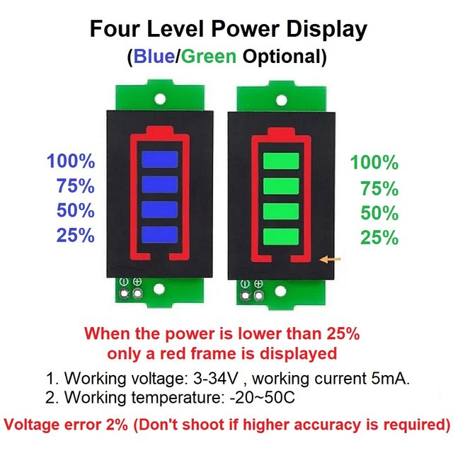
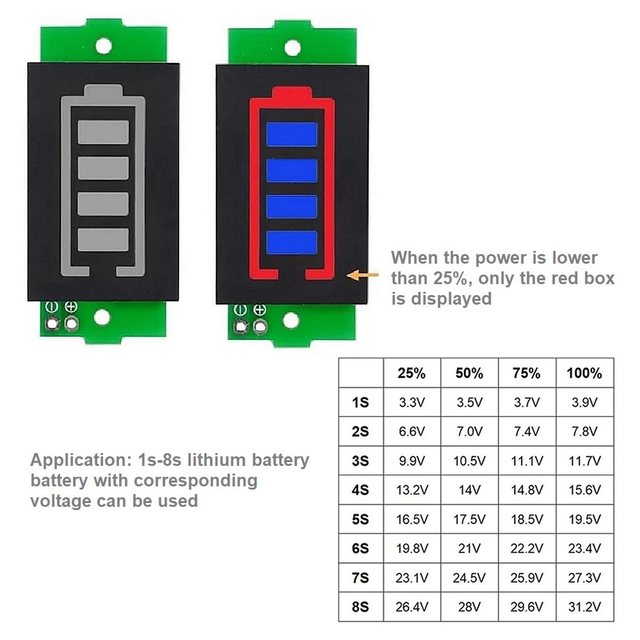
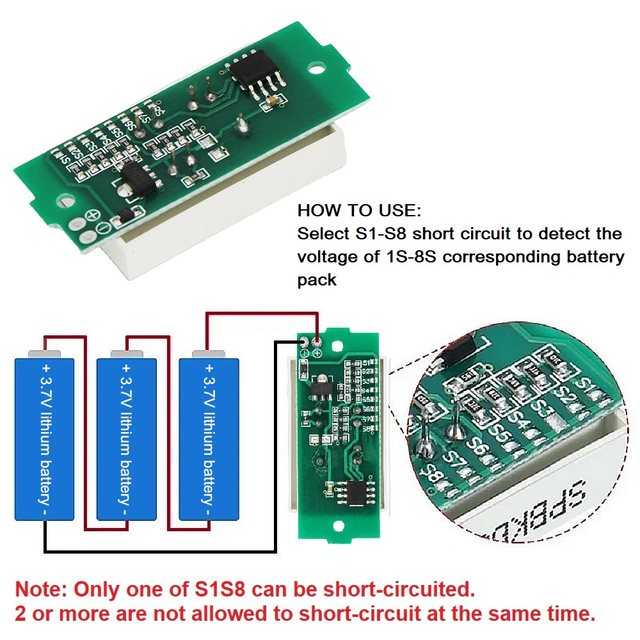
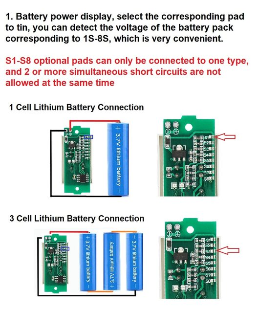
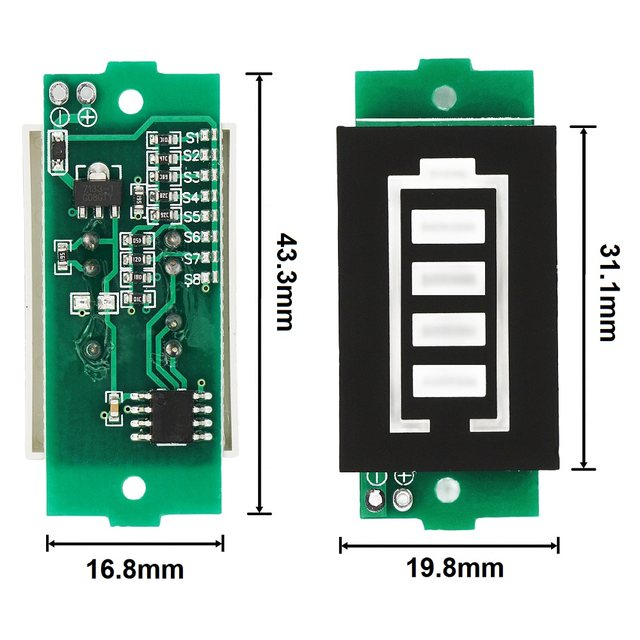
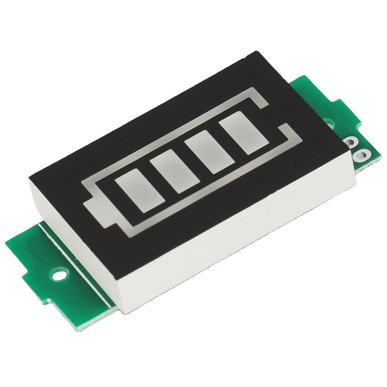

Product Feature:
1. Using high-quality materials, the quality is guaranteed
2. Battery power display, select the corresponding pad to tin, you can detect the voltage of the battery pack corresponding to 1S-8S, which is very convenient.
3. Wide range of applications, 1S-8S lithium batteries, batteries with corresponding voltages can be used
4. The four-level power display is more intuitive
5. The appearance of the product is small and exquisite.
Parameter:
Working voltage: 3-34V
Working current: 5mA
Working temperature: -20-50℃
Voltage error 2%
Tips:
This model is not waterproof, if you use it outdoors, please make it waterproof, because the electronic components need to be used in a dry environment.
Lithium-ion lead-acid nickel-metal hydride batteries can use the power display board, as long as the required voltage is within the range of the parameter table.





